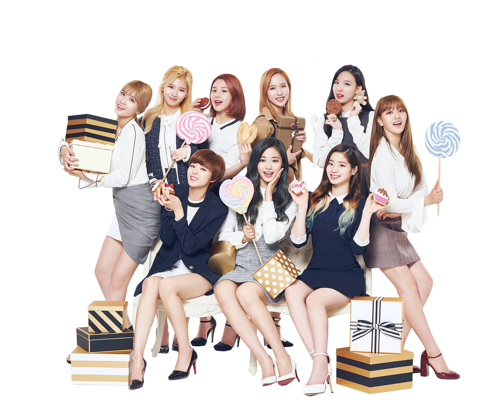

ONE IN MILLION! Hello, We Are Twice!
"South Korea's National Girl Group" atau Twice adalah Girl Group yang beranggotakan 9 orang di bawah agensi JYP Entertainment. Girl Group yang dibentuk melalui reality show Sixteen memulai debutnya pada 20 Oktober 2015 dengan mini album The Story Begin. Mereka sudah memperoleh banyak prestasi, salah satunya adalah penghargaan SONG OF THE YEAR(SOTY) pada tahun 2016 dengan lagu yang berjudul "Cheer Up!" yang mereka dapatkan dalam waktu yang relatif cepat yaitu 1 tahun setelah debut.
